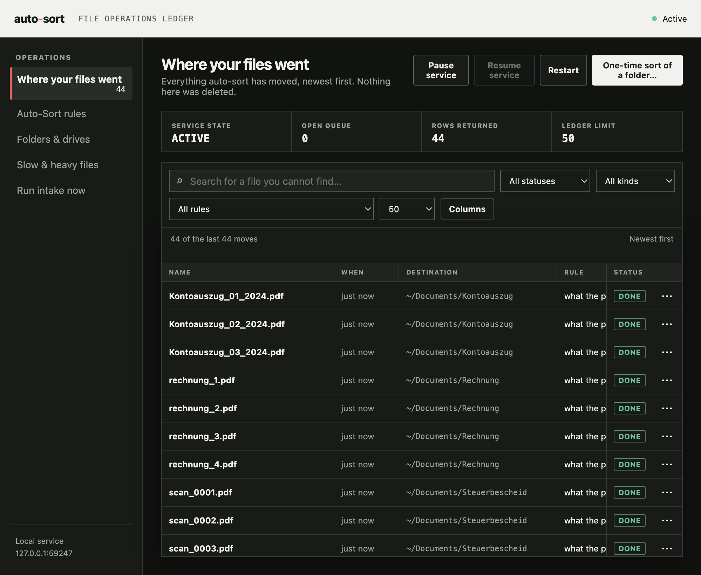
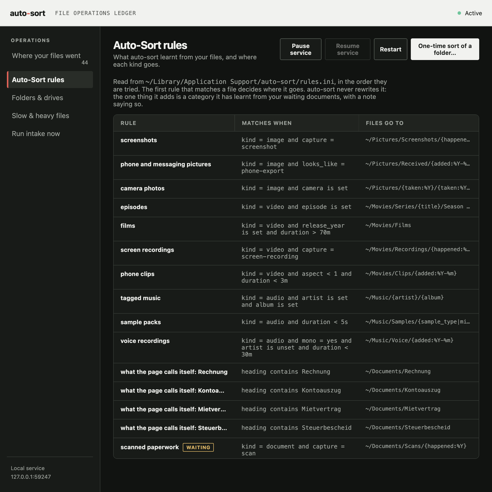
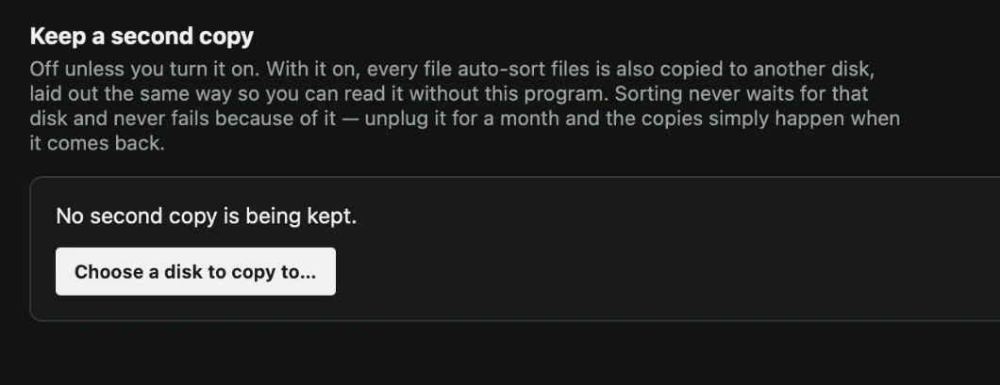

Almost everything unwanted on a computer arrived through the Downloads folder. It is not somewhere anybody keeps things — it is where files land on the way to somewhere else — so auto-sort treats it as a funnel: everything leaves, and nothing is kept back. It works out what each file is from its bytes rather than its name, learns the structure from the folder itself, and writes down every move so that all of it can be undone.
$ auto-sort propose ~/Downloads 696 items, 757 files, 10.1 GB Downloaded from furaffinity 43 twitter 50 Structure this folder suggests site-uploader 43 items -> 21 folders, 70% sharing one duration 60 items -> 4 folders, 88% sharing one Considered, not proposed camera only 0.3% of items have camera music nothing in this folder has artist
What it refuses matters more than what it proposes. A folder per artist is the obvious structure for downloaded art — and on a folder where twenty-one artists share forty-three files, it is declined.
Identification
A .jpg that is a PNG, an .mp4 with no video track and an invoice.pdf.exe are ordinary contents of the folders this exists for. Four readers run cheapest first, and each may overrule the one before it when it has better evidence.
600 spellings · 13 kinds
Right most of the time, free, and never trusted further than likely. Nineteen are marked ambiguous, because .ts is TypeScript or a transport stream and the name settles it.
145 signatures
With refiners for the containers several kinds share: PK\x03\x04 is a zip, and also every Office document, EPUB, Android package and USDZ model ever made.
EXIF · ID3 · MP4 · EBML · PDF
Camera and capture date, artist and album, duration and track layout, producer and page count — parsed here rather than shelled out to anything.
kMDItemWhereFroms · Zone.Identifier
Your operating system already recorded the download URL. It is the sharpest evidence available and almost nothing uses it.
A stronger source overrules a weaker one and the disagreement is kept, so “the extension lies” is itself something a rule can match. Agreement raises confidence: an artist from an ID3 tag is strong, and the same artist also parsed out of the filename is stronger, because two independent readers would have to be wrong in the same direction.
A fact that could not be established is absent rather than empty. A missing reader therefore narrows what can match instead of making it match wrongly — which is what lets one rules file work on a capable machine and a bare one.
Getting started
Double-click Start auto-sort.command on macOS, start.sh on Linux or start.bat on Windows. It writes a rules file if there is not one, says what it is about to watch, points out that dry run is on, and then runs — leaving an icon in the menu bar and a log page behind it. None of that requires knowing what Python is.

auto-sort propose ~/Downloads --out my-rules.ini what this folder needs auto-sort sort ~/Downloads --rules my-rules.ini see what it would do auto-sort explain FILE why one file goes where auto-sort corrections what you moved back auto-sort undo last take it all back
The terminal is optional and the icon is not a wrapper around it — both drive the same ledger.
Python 3.8 or newer, and nothing else — no pip install, on any platform. Reading headers, learning conventions, deciding, moving files and remembering all of it are done with struct, re, os and sqlite3, which every Python already has.
Even the menu bar icon has no dependency: it is built on the Objective-C runtime through ctypes, the same way the Windows one is built on Shell_NotifyIcon. ffprobe and exiftool are used if they happen to be installed, and declining both still leaves a working sorter.
It does not look at content — no image, audio or video recognition. Files named after their own checksum carry nothing to sort by, and the report says how many there are rather than pretending otherwise. It does not rename a film library from an online database; that is Radarr's job and it is better at it. And it does not delete.
In depth
Writing a rules file by hand means deciding in advance what shape a folder should be. That is backwards: a disk with four hundred thousand files on it already has a shape, and the job is to find it.
A naming convention is, by definition, something that repeats — so it can be counted rather than tabulated. In a filename written by software, a field that repeats across many files is a category; a field different in every file is an identifier.
Given forty-three files shaped <digits>.<word>_<rest>, the digits are all different and the words repeat, so it writes a rule that captures the word. Nothing in the code knows what that site is. There is no table of websites anywhere in the project, and nothing ever contacts one.
; 43 files, 21 distinct values in one field, ; 70% of them sharing a folder. [rule: furaffinity names] when = kind = image and source = furaffinity extract = stem re ^\d{10}\.(?P<group>[a-z0-9-]+)_.* into = ~/Pictures/furaffinity/{group}
Written by the survey, not by a person — and readable, editable and arguable because of it.
A PDF called scan0001.pdf tells a sorter nothing, and its metadata usually agrees. The words on the page do not — reading them needs nothing but zlib, since PDF content is Flate-compressed drawing operators underneath.
There is no table of document types here either, in any language. A word heading three or more of somebody's files, and not nearly all of them, is a category those files chose; a word on nearly every one is the letterhead and is dropped. Counted this way, a folder of German and Belgian paperwork sorts itself under Rechnung, Kontoauszug, Steuerbescheid and Mietvertrag — words that do not appear anywhere in this project's code.

The ledger says where each file was put; the disk says where it is. Any difference is you disagreeing, and where you moved it to is the answer. auto-sort reports which rules you kept overriding — often more useful than any guess — and proposes a rule when enough corrections agree. It proposes; it never silently adjusts.
A folder reveals itself gradually, so the files that arrive first are always filed worst — not through error, but because there was nothing to learn from yet. regroup goes back for them, moving what sits in a holding folder into structure that has since become visible, without anybody dragging files back into Downloads. Only provisional placements are revisited, so it is idempotent and cannot reshuffle a disk.
Every move is a row in a ledger before it happens and is confirmed after: source, destination, size, content hash, and the rule that fired. That ledger is the feature. It is the difference between a tool somebody points at their home directory and one they run once and delete.
dry run by default
And the first real run against any folder is forced to a preview you have to look at before a second run will move anything.
auto-sort undo last
Walks the ledger backwards, including removing the empty folders the run created — and never the ones that were already there.
not even duplicates
The strongest action available is a move. De-duplication means moving copies somewhere for a person to empty.
collisions get a suffix
A cross-volume move copies, verifies by hash, then removes — never the other order. An external drive is sorted in place.
Nothing here touches the network, and it is not a service. There is nothing to sign up for, no telemetry and no crash reporter — which is also why a failure has no way of reaching anybody on its own.
One switch on the log page keeps a mirror of everything on another disk, laid out exactly like the first so it reads without this program. Off until asked for, because out of the box auto-sort should touch nothing but the folders the computer already has.
The disk being unplugged, asleep or full is the ordinary case, not the exception, so sorting never waits on it and never fails because of it — the copy is queued the instant a file is filed and made whenever the disk is actually there.

The wider workshop
Move between guided-meditation authoring, measured speech, live interpreting, a voice companion, lyric video, delivery validation, keeping a Downloads folder empty, and the small field tools that support all of them, on one voice, one speech engine and one hearing layer they share.
Assemble guided sessions and keep published maps beside what was actually found.
Explore Gateway Forge →A transparent Piper workbench for timing, pronunciation, and honest audio export.
Explore Voice Forge →Karaoke and narration video with a vector visor face that mouths every word.
Explore Protoke →Check a finished file against where it is going, and correct it without touching the original.
Explore Media Preflight →Fetch from a link or convert what you already have, without re-encoding what it does not have to.
Explore siphon →Empty the Downloads funnel into structure the folder taught it, and undo any of it.
Explore auto-sort →Hear the table in English a few seconds behind, cut at the end of each thought, on your own phone.
Explore Interpreter →A local voice companion for Mac, iPhone and iPad, with a protogen LED-visor face.
Explore companion-forge →Small utilities for audio inspection, corpus work, authoring, and repeatable checks.
Open the toolbox →Teaching one small voice to speak eight languages, and releasing it for every app that speaks.
Open the repository →The speech engine the apps share: espeak-ng, the phonemizer and Piper inference, from one source.
Open the repository →The hearing layer Interpreter and companion-forge share: ObjCExceptions, SileroVAD, SampleBuffer and ModelStore, from one source.
Open the repository →The builder and project network every page here shares, kept in one place.
Open the repository →Get in touch
There is no analytics here and no crash reporter, so a failure has no way of reaching me on its own.
Its tests pass on Windows, but nobody has used it there by hand yet. If you use it on it, say what happened, working or not.